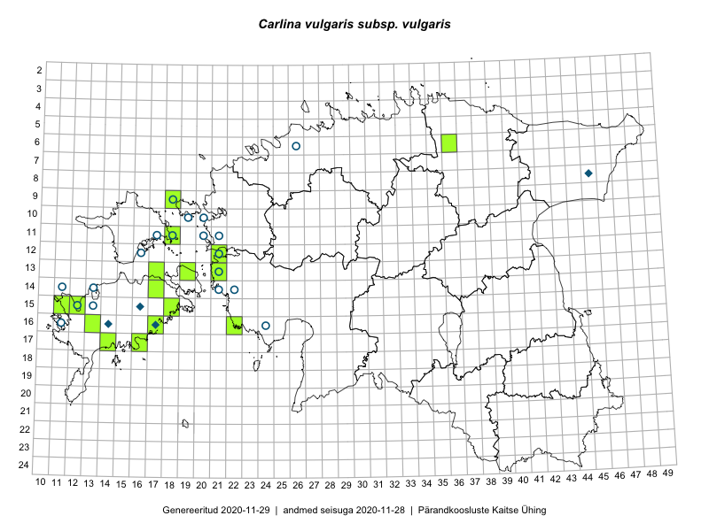

Carlina vulgaris subsp. vulgaris — harilik keelikurohi (kitsas tähenduses)
Asteraceae :: Carlina vulgaris subsp. vulgaris L. (52)

Kaart põhineb 52 kirjel:
herbaareksemplare 52
Taime kaasaegsed ja ajaloolised leiukohad asuvad 31 ruudus.
Tingmärgid ja ruutude arvud periooditi (U1 / V2 )
█ 2006–2020 (14/–)
◆/◇ 1971–2005 (4/0)
○ 1921–1970 (19/0)
+ kuni 1920 (0/0)
× hävinud (–/0)
? kaheldav (–/0)
| Ruut | Leidja(d) | Leiuaeg | Kirje |
|---|---|---|---|
| 08-45 | Raino Lampinen, Tuula Lampinen | 1993-08-16 | TAA0006179: Carlina vulgaris subsp. vulgaris L. |
| 13-21 | S. Pärn, Silvia Talts | 1962-07-11 | TAA0006192: Carlina vulgaris subsp. vulgaris L. |
| 12-21 | Linda Viljasoo | 1962-07-11 | TAA0006193: Carlina vulgaris subsp. vulgaris L. |
| 14-21 | Gustav Vilbaste | 1937-07-04 | TAA0006194: Carlina vulgaris subsp. vulgaris L. |
| 14-21 | Gustav Vilbaste | 1937-07-10 | TAA0006195: Carlina vulgaris subsp. vulgaris L. |
| 10-19 | Gustav Vilbaste | 1934-08-08 | TAA0006200: Carlina vulgaris subsp. vulgaris L. |
| 09-18 | Gustav Vilbaste | 1933-08-16 | TAA0006201: Carlina vulgaris subsp. vulgaris L. |
| 09-18 | Gustav Vilbaste | 1933-08-12 | TAA0006204: Carlina vulgaris subsp. vulgaris L. |
| 16-14 | Maret Kask | 1977-08-21 | TAA0006219: Carlina vulgaris subsp. vulgaris L. |
| 10-20 | Gustav Vilbaste | 1931-08-04 | TAA0006232: Carlina vulgaris subsp. vulgaris L. |
| 10-20 | Gustav Vilbaste | 1931-08-04 | TAA0006233: Carlina vulgaris subsp. vulgaris L. |
| 11-20 | Gustav Vilbaste | 1934-07-16 | TAA0006234: Carlina vulgaris subsp. vulgaris L. |
| 11-17 | Gustav Vilbaste | 1931-07-17 | TAA0006236: Carlina vulgaris subsp. vulgaris L. |
| 11-17 | Gustav Vilbaste | 1931-07-17 | TAA0006237: Carlina vulgaris subsp. vulgaris L. |
| 12-16 | Gustav Vilbaste | 1931-08-20 | TAA0006238: Carlina vulgaris subsp. vulgaris L. |
| 11-18 | Gustav Vilbaste | 1931-07-14 | TAA0006239: Carlina vulgaris subsp. vulgaris L. |
| 06-26 | Gustav Vilbaste | 1924-07-23 | TAA0006245: Carlina vulgaris subsp. vulgaris L. |
| 15-16 | Guara Muuga | 1972-07-16 | TAA0006265: Carlina vulgaris subsp. vulgaris L. |
| 11-21 | Silvia Talts | 1963-08-01 | TAA0006273: Carlina vulgaris subsp. vulgaris L. |
| 16-24 | V. Puusepp | 1962-07-27 | TAA0006309: Carlina vulgaris subsp. vulgaris L. |
| 16-11 | Silvia Talts | 1931-07-22 | TAA0006310: Carlina vulgaris subsp. vulgaris L. |
| 14-13 | L. Juhans | 1948-08-07 | TAA0006311: Carlina vulgaris subsp. vulgaris L. |
| 14-13 | L. Juhans | 1948-08-07 | TAA0006312: Carlina vulgaris subsp. vulgaris L. |
| 15-13 | Z. Izvekova | 1948-08-09 | TAA0006313: Carlina vulgaris subsp. vulgaris L. |
| 14-21 | M. Ojaveer | 1952-07-17 | TAA0006314: Carlina vulgaris subsp. vulgaris L. |
| 11-18 | Erast Parmasto, Rebane, Haide-Ene Rebassoo | 1956-07-02 | TAA0006315: Carlina vulgaris subsp. vulgaris L. |
| 11-20 | A. Ojaveer | 1963-07-31 | TAA0006316: Carlina vulgaris subsp. vulgaris L. |
| 12-16 | V. Puusepp | 1956-06-24 | TAA0006317: Carlina vulgaris subsp. vulgaris L. |
| 14-22 | A. Jõgi, E.M. Haaviste | 1953-08-10 | TAA0006318: Carlina vulgaris subsp. vulgaris L. |
| 11-20 | H. Paavle, A. Ojaveer | 1963-07-31 | TAA0006319: Carlina vulgaris subsp. vulgaris L. |
| 11-18 | H. Tamm, H. Karu | 1955-07-26 | TAA0006320: Carlina vulgaris subsp. vulgaris L. |
| 11-18 | H. Tamm, H. Karu | 1955-07-26 | TAA0006321: Carlina vulgaris subsp. vulgaris L. |
| 16-17 | Toomas Kukk | 1991-07-28 | TAA0006323: Carlina vulgaris subsp. vulgaris L. |
| 14-11 | Linda Viljasoo | 1969-07-26 | TAA0006324: Carlina vulgaris subsp. vulgaris L. |
| 12-21 | Peedu Saar, Ott Luuk | 2015-08-27 | TAA0116086: Carlina vulgaris subsp. vulgaris L. |
| 15-11 | Peedu Saar | 2015-08-05 | TAA0116087: Carlina vulgaris subsp. vulgaris L. |
| 11-18 | Peedu Saar, Nele Jõessar, Sander Laherand | 2016-08-08 | TAA0133873: Carlina vulgaris subsp. vulgaris L. |
| 06-36 | Peedu Saar, Liina Oja, Susanna Vain | 2016-07-27 | TAA0133875: Carlina vulgaris subsp. vulgaris L. |
| 16-17 | Toomas Kukk, Eerik Leibak | 2015-08-08 | TAA0135585: Carlina vulgaris subsp. vulgaris L. |
| 17-14 | Toomas Kukk, Meeli Mesipuu, Johannes Kõdar | 2016-08-11 | TAA0137016: Carlina vulgaris subsp. vulgaris L. |
| 13-19 | Toomas Kukk | 2012-09-06 | TAA0112370: Carlina vulgaris subsp. vulgaris L. |
| 15-12 | Toomas Kukk | 2012-08-21 | TAA0112460: Carlina vulgaris subsp. vulgaris L. |
| 09-18 | Sander Laherand, Toomas Kukk | 2016-07-07 | TAA0135763: Carlina vulgaris subsp. vulgaris L. |
| 16-13 | Aira Alasi, Sirje Azarov | 2015-09-09 | TAA0133675: Carlina vulgaris subsp. vulgaris L. |
| 17-16 | Aira Alasi, Sirje Azarov | 2015-08-12 | TAA0133676: Carlina vulgaris subsp. vulgaris L. |
| 17-16 | Aira Alasi, Sirje Azarov | 2015-08-17 | TAA0133677: Carlina vulgaris subsp. vulgaris L. |
| 13-21 | Thea Kull | 2015-08-28 | TAA0139334: Carlina vulgaris subsp. vulgaris L. |
| 16-17 | Ott Luuk, Peedu Saar | 2016-09-01 | TAA0139087: Carlina vulgaris subsp. vulgaris L. |
| 13-17 | Ott Luuk, Peedu Saar | 2016-08-29 | TAA0139243: Carlina vulgaris subsp. vulgaris L. |
| 14-17 | Ott Luuk | 2015-06-29 | TAA0142437: Carlina vulgaris subsp. vulgaris L. |
| 15-12 | J. Esser | 1925-08-26 | TAA0117943: Carlina vulgaris subsp. vulgaris L. |
| 13-21 | Agnes Ojaveer, Heiki Tamm | 1962-07-11 | TAA0146548: Carlina vulgaris subsp. vulgaris L. |
Ruutude arv uue atlase andmekogu järgi. Muuhulgas arvestab vanemat herbaariumi, 2005. aasta atlase välitöölehtedelt uuesti digitaliseeritud andmeid jne. Uue atlase andmekogust pärinevad andmed on kaardile kantud siniste sümbolitega.↩︎
Ruutude arv 2005. aasta atlase (Kukk, T., Kull, T., Eesti taimede levikuatlas. Eesti Maaülikool, Põllumajandus- ja Keskkonnainstituut, Tartu, 2005) järgi. Andmeallikana on kasutatud levik.exe programmi, kus igas ruudus on registreeritud vaid uusim leid. Seetõttu on vanemate perioodide kohta andmed puudulikud. Kasutatud levik.exe andmestikus leidub mõningaid kõrvalekaldeid atlase trükis ilmunud versioonist, sagedamini tarnade ja käpaliste seas. Lisaks leidub selles andmestikus valik liike (peamiselt väheste leidudega tulnuktaimed), mille kaarte trükis ei avaldatud. Vana atlase andmed ruutudest, milles ei ole uue atlase andmekogus leide enne 2006. aastat, on kaardil esitatud punaste sümbolitega. Vana atlase andmetel hävinud ja kaheldavaid leiukohti pole hilisemate (taas)leidude põhjal korrigeeritud.↩︎